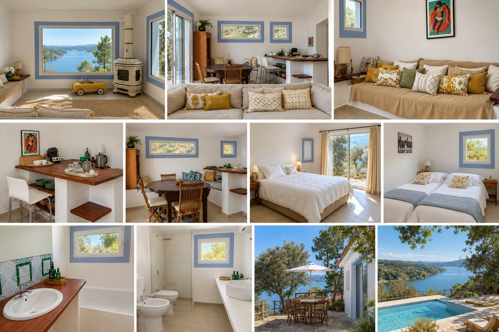
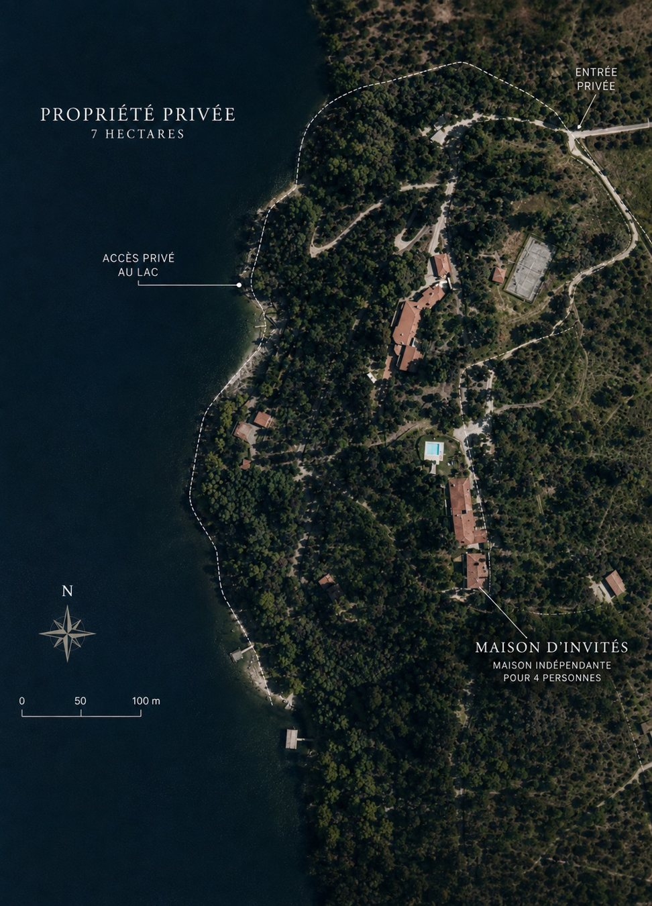
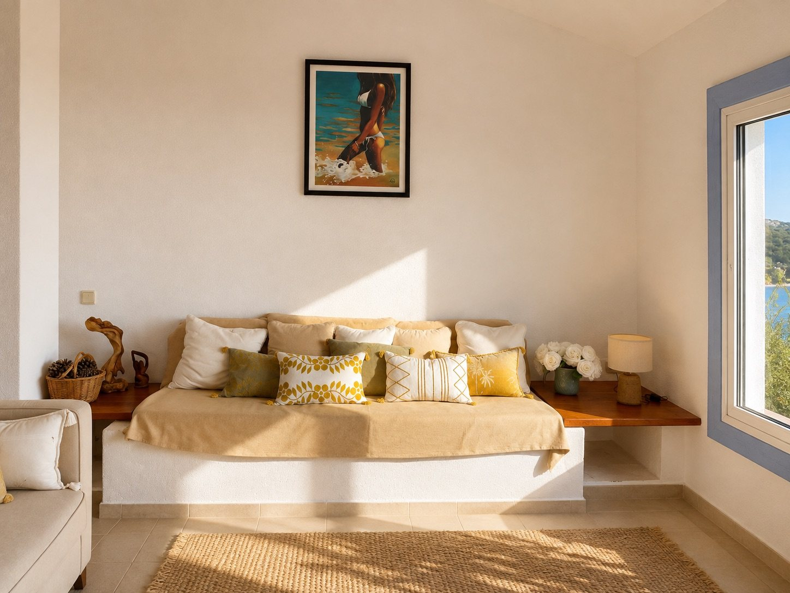
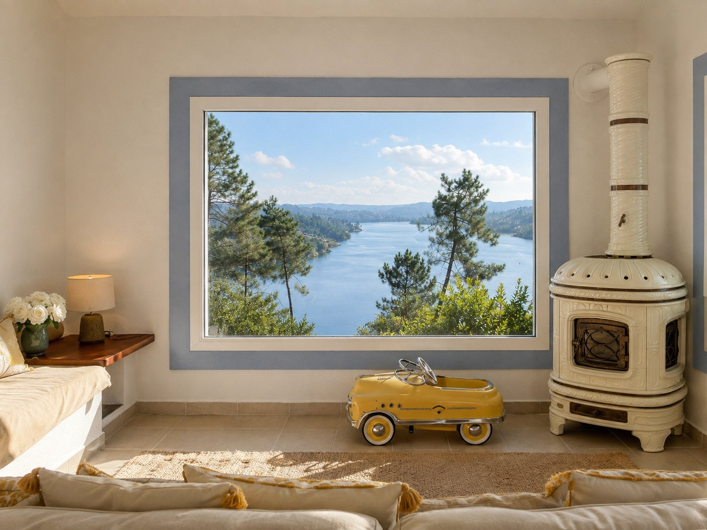
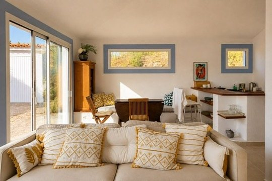
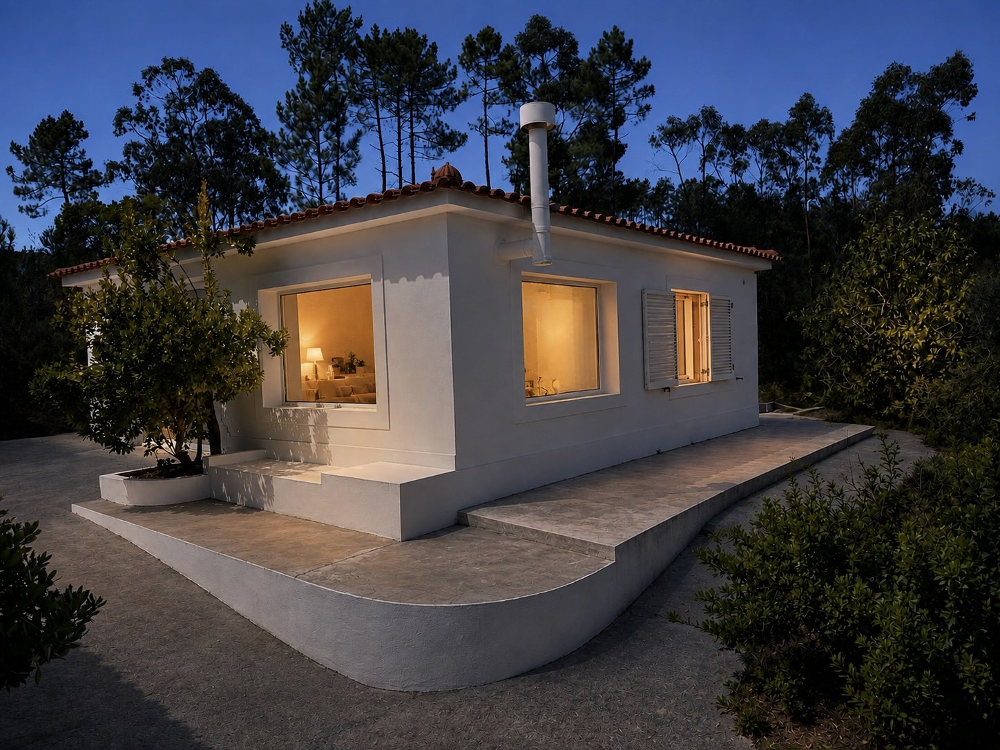
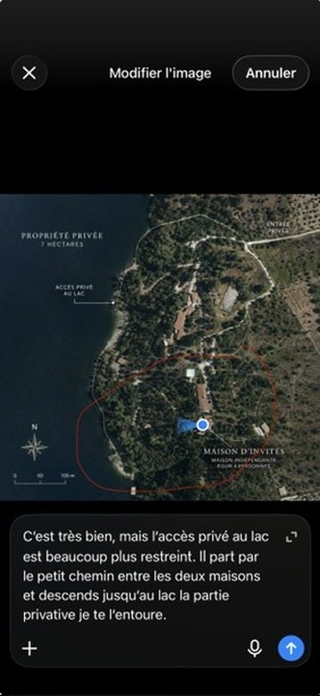
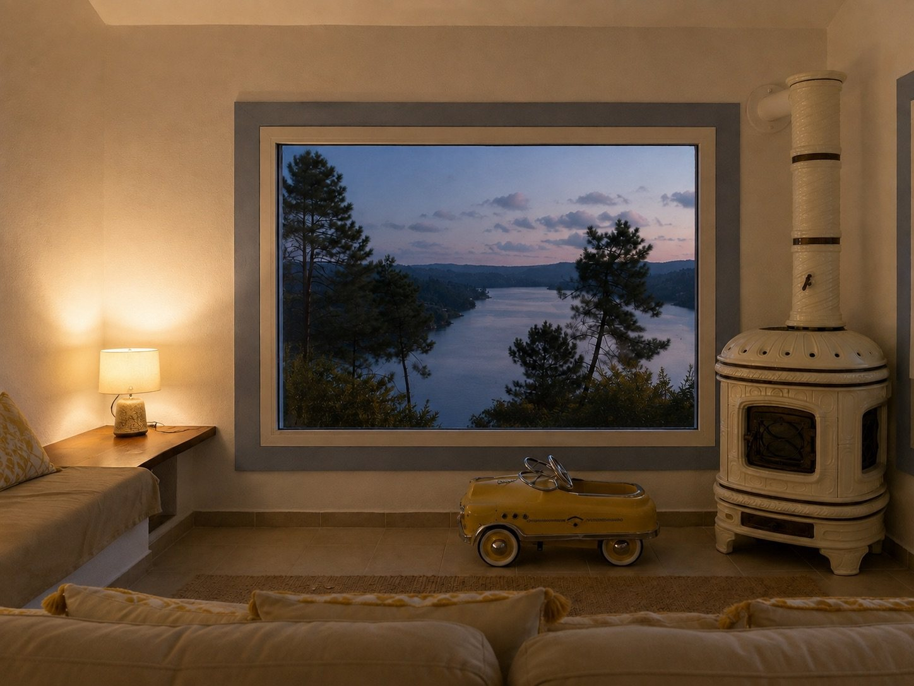

Photo de la Grande Maison à compléter
4 chambres
La Grande Maison
Pour les séjours en famille ou entre amis, avec les espaces nécessaires pour partager les vacances au bord du lac.
Tarif indicatif en août : 2 500 € / semaine*
Demander un séjourDeux maisons de vacances dans un domaine préservé, face au lac de Castelo de Bode. Nature, calme et moments partagés au cœur du Portugal.
Découvrir les maisonsPrès de Tomar, Alto do Rio s'étend sur environ sept hectares de nature. Le domaine offre un cadre exceptionnel pour se retrouver, se baigner, explorer le lac et profiter du silence.
Un chemin descend vers une petite plage privée et un ponton, au milieu des pins, eucalyptus et arbres fruitiers. La piscine surplombe le paysage. Un plan aérien du domaine est présenté ci-dessous.
L'accès au lac se fait par un chemin pentu. Piscine non chauffée. Les enfants doivent être surveillés en permanence près de l'eau.

Un plan aérien pour situer les maisons et le bord de l’eau. L’accès piéton privé au lac suit un chemin restreint et pentu entre les bâtiments ; les limites et tracés sont indicatifs.

Deux maisons à louer pour découvrir Castelo de Bode et sa région. Les demandes sont traitées personnellement.
Pour les séjours en famille ou entre amis, avec les espaces nécessaires pour partager les vacances au bord du lac.

Un séjour lumineux tourné vers le lac, avec grande fenêtre panoramique, terrasse, une chambre double et une chambre à deux lits simples rapprochables.
*Tarifs indicatifs correspondant à la période d'août communiquée, sous réserve de confirmation et de disponibilité. Aucun tarif ferme n'est garanti par le site.
Une sélection de photographies réelles de la petite maison et de son environnement. Les photographies de la Grande Maison pourront être ajoutées séparément.





Alto do Rio se trouve à Vale da Laje, près du lac de Castelo de Bode, dans la région de Tomar.
Partez découvrir le Convento de Cristo à Tomar et son héritage templier, les rues historiques d'Abrantes, ou la tradition équestre de Golegã. Vous pouvez aussi rester simplement sur place et profiter du lac.
Voir la région sur une carte ↗Indiquez la maison et les dates souhaitées. Nous reviendrons vers vous pour confirmer les disponibilités et le tarif.
Contact : fiduciaireeurope@gmail.com
Ce formulaire ouvre votre application de messagerie avec une demande préremplie. Il n'envoie rien automatiquement : vous devrez confirmer l'envoi dans votre messagerie.